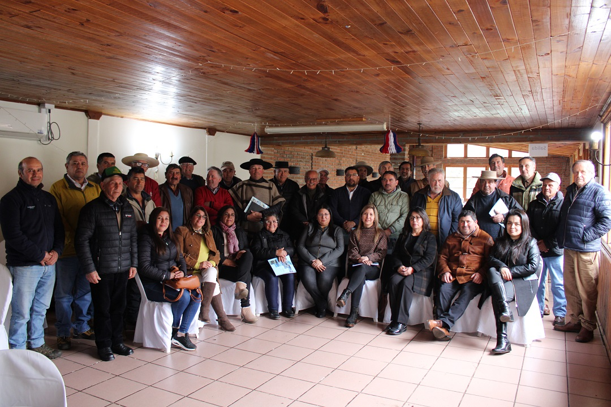

En la Asamblea General 2023 se ratificó el Directorio de la Junta de Vigilancia del Río Longaví y sus Afluentes, la que corresponde realizar cada segundo miércoles de septiembre. Luego de que los representantes de las 32 comunidades de aguas, eligieran seguir con los mismos Directores, siendo una aprobación a la gestión que se ha hecho durante las últimas temporadas de distribución de aguas. Normalmente, en la Asamblea se detallan las acciones que se realiza durante cada periodo para explicar alcances y trabajos, con los representantes de las acciones de aguas del sistema de riego de Longaví, Retiro y Parral.
nal Robles Nuevos, quienes tienen la misión de dar seguridad del cumplimiento de los procedimientos y aprobar el acta de la asamblea. Los estatutos de la JVRL norma reunirse una vez al año, ocasión en que se presentan los balances, memoria, presupuesto, entre otros puntos de relevancia. Además, se realiza la votación de Directores, Revisores de Cuentas y Ministros de fe que estarán vigentes durante el nuevo período. Durante la última Asamblea se ratificó el Directorio vigente, compuesto por Máximo Correa, Fernando Soto, Herman Parada, Omar Albornoz, Jaime Venegas, Emilio Sarah y Alfonso Rodríguez. Ellos son los que determinan, según información técnica, la tasa de distribución, la administración del Embalse Bullileo y el desarrollo de distintos proyectos en general en beneficio de la JVRL. Así mismo, se eligieron Revisores de Cuentas, quedando Nibaldo Corvalán del Canal Retiro y Elizardo Bravo del del Canal Robles,Nuevos, quienes tienen la misión de dar seguridad del cumplimiento de los procedimientos y aprobar el acta de la asamblea.
Elizardo Bravo
Leer másNibaldo Corvalán del Canal Retiro
Leer más